FEM3D module¶
| Author: | Francois Cuvelier <cuvelier@math.univ-paris13.fr> |
|---|---|
| Date: | 15/09/2013 |
Contains functions to build some finite element matrices using  -Lagrange finite elements on a 3D mesh.
Each assembly matrix is computed by three differents versions called base,
OptV1 and OptV2 (see here)
-Lagrange finite elements on a 3D mesh.
Each assembly matrix is computed by three differents versions called base,
OptV1 and OptV2 (see here)
Contents
Assembly matrix (base, OptV1 and OptV2 versions)¶
Let  be a tetrahedral mesh of
be a tetrahedral mesh of  corresponding
to the following structure data:
corresponding
to the following structure data:
![\mbox{\begin{tabular}{lccll}
\hline
\textbf{name} & \textbf{type} & \textbf{dimension} & \textbf{description} & \textbf{Python}\\
\hline
$\nq$ & integer & 1 & number of vertices & \texttt{nq}\\
$\nme$ & integer & 1 & number of elements & \texttt{nme}\\
$\q$ & double & $3 \times {\nq}$ &
\begin{minipage}[t]{7.9cm}
array of vertices coordinates. $\q(\al,j)$ is the $\nu$-th coordinate of the $j$-th vertex,
$\al\in\{1,2,3\}$, $j\in\{1,\hdots,\nq\}.$
The $j$-th vertex will be also denoted by $\q^j$
\end{minipage}&
\begin{minipage}[t]{3cm}
\texttt{q} (transposed)\\
\texttt{q[j-1]} = $\q^j$
\end{minipage}\\
$\me$ & integer & $4 \times \nme$ &
\begin{minipage}[t]{7.9cm}
connectivity array. ${\me}(\jl,k)$ is the storage index of the $\beta$-th vertex
of the $k$-th element, in the array~$q$, for $\jl\in\{1,\hdots,4\}$ and $k\in\{1,\hdots,{\nme}\}$
\end{minipage}&\texttt{me} (transposed)\\
$\rm volumes$ & double & $1\times {\nme}$ &
\begin{minipage}[t]{7.9cm}
array of volumes. ${\rm volumes}(k)$ is the $k$-th tetrahedron volume,
$k\in\{1,\hdots,\nme\}$
\end{minipage}&\texttt{volumes}\\
\hline
\end{tabular}}](_images/math/cc16cf40bee8d694e1d96b522c2dff9e8317f5d2.png)
The -Lagrange basis functions associated to are denoted by  for all
for all  and are defined by
and are defined by

We also define the global alternate basis  by
by

and the global block basis  by
by

Mass Matrix¶
Assembly of the Mass Matrix by -Lagrange finite elements
using base, OptV1 and OptV2 versions respectively (see report).
The Mass Matrix  is given by
is given by

Note
generic syntax:
M = MassAssembling3DP1<version>(nq,nme,me,volumes)
- nq: total number of nodes of the mesh, also denoted by
 ,
, - nme: total number of tetrahedra, also denoted by
 ,
, - me: Connectivity array, (nme,4) array,
- volumes: Array of tetrahedra volumes, (nme,) array,
- returns a Scipy CSC sparse matrix of size

where <version> is base, OptV1 or OptV2
>>> from pyOptFEM.FEM3D import *
>>> Th=CubeMesh(5)
>>> Mbase = MassAssembling3DP1base(Th.nq,Th.nme,Th.me,Th.volumes)
>>> MOptV1= MassAssembling3DP1OptV1(Th.nq,Th.nme,Th.me,Th.volumes)
>>> print(" NormInf(Mbase-MOptV1)=%e " % NormInf(Mbase-MOptV1))
NormInf(Mbase-MOptV1)=1.734723e-18
>>> MOptV2= MassAssembling3DP1OptV2(Th.nq,Th.nme,Th.me,Th.volumes)
>>> print(" NormInf(Mbase-MOptV2)=%e " % NormInf(Mbase-MOptV2))
NormInf(Mbase-MOptV2)=1.734723e-18
We can show sparsity of the Mass matrix :
>>> from pyOptFEM.FEM3D import * >>> Th=CubeMesh(5) >>> M=MassAssembling3DP1OptV2(Th.nq,Th.nme,Th.me,Th.areas) >>> showSparsity(M)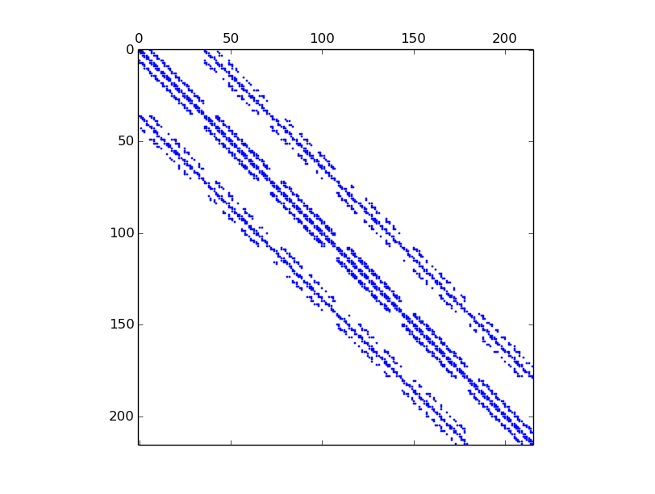Figure 18: Sparsity of Mass Matrix generated with command showSparsity(M)
Note
source code
- pyOptFEM.FEM3D.assembly.MassAssembling3DP1base(nq, nme, me, volumes)[source]
Assembly of the Mass Matrix by
-Lagrange finite elements using base version (see report).
- pyOptFEM.FEM3D.assembly.MassAssembling3DP1OptV1(nq, nme, me, volumes)[source]
Assembly of the Mass Matrix by
-Lagrange finite elements using OptV1 version (see report).
- pyOptFEM.FEM3D.assembly.MassAssembling3DP1OptV2(nq, nme, me, volumes)[source]
Assembly of the Mass Matrix by
-Lagrange finite elements using OptV2 version (see report).
Stiffness Matrix¶
Assembly of the Stiffness Matrix by -Lagrange finite elements using base,
OptV1 and OptV2 versions respectively (see report).
The Stiffness Matrix  is given by
is given by

Note
generic syntax
- M=StiffAssembling3DP1<version>(nq,nme,q,me,volumes)
Compute the stiffness sparse matrix where <version> is base, OptV1 or OptV2
Parameters: - nq – total number of nodes of the mesh, also denoted by ,
- nme – total number of tetrahedra, also denoted by ,
- q (numpy array of float) –
- array of vertices coordinates,
- (nq,3) array for base and OptV1 versions,
- (3,nq) array for OptV2 version,
- me (numpy array of int) –
- Connectivity array,
- (nme,4) array for base and OptV1 versions,
- (4,nme) array for OptV2 version,
- volumes (numpy array of floats,) – (nme,) array of tetrahedra volumes,
Returns: a Scipy CSC sparse matrix of size

- nq – total number of nodes of the mesh, also denoted by
Benchmarks of theses functions are presented in Stiffness Matrix. We give a simple usage :
>>> from pyOptFEM.FEM3D import *
>>> Th=CubeMesh(5)
>>> Sbase = StiffAssembling3DP1base(Th.nq,Th.nme,Th.q,Th.me,Th.volumes)
>>> SOptV1= StiffAssembling3DP1OptV1(Th.nq,Th.nme,Th.q,Th.me,Th.volumes)
>>> print(" NormInf(Sbase-SOptV1)=%e " % NormInf(Sbase-SOptV1))
NormInf(Sbase-SOptV1)=2.220446e-15
>>> SOptV2= StiffAssembling3DP1OptV2(Th.nq,Th.nme,Th.q,Th.me,Th.volumes)
>>> print(" NormInf(Sbase-SOptV2)=%e " % NormInf(Sbase-SOptV2))
NormInf(Sbase-SOptV2)=2.220446e-15
Note
source code
- pyOptFEM.FEM3D.assembly.StiffAssembling3DP1base(nq, nme, q, me, volumes)[source]
Assembly of the Stiffness Matrix by
-Lagrange finite elements using base version (see report).
- pyOptFEM.FEM3D.assembly.StiffAssembling3DP1OptV1(nq, nme, q, me, volumes)[source]
Assembly of the Stiffness Matrix by
-Lagrange finite elements using OptV1 version (see report).
- pyOptFEM.FEM3D.assembly.StiffAssembling3DP1OptV2(nq, nme, q, me, volumes)[source]
Assembly of the Stiffness Matrix by
-Lagrange finite elements using OptV2 version (see report).
Elastic Stiffness Matrix¶
Assembly of the Elastic Stiffness Matrix by -Lagrange finite elements using base,
OptV1 and OptV2 versions respectively (see report).
The Elastic Stiffness Matrix  is given by
is given by
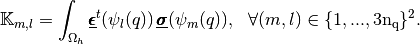
where 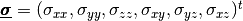 and 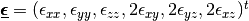 are the elastic stress and strain tensors respectively.
Note
generic syntax
- M=StiffElasAssembling3DP1<version>(nq,nme,q,me,volumes,la,mu,Num)
Compute the elastic stiffness sparse matrix where <version> is base, OptV1 or OptV2
Parameters: - nq – total number of nodes of the mesh,
- nme – total number of tetrahedrons,
- q (numpy array of float) –
- vertices coordinates,
- (nq,3) array for base and OptV1 versions,
- (3,nq) array for OptV2 version,
- me (numpy array of int) –
- connectivity array,
- (nme,4) array for base and OptV1 versions,
- (4,nme) array for OptV2 version,
- volumes (numpy array of floats,) – (nme,) array of tetrahedra volumes,
- la – the first Lame coefficient in Hooke’s law, denoted by
 ,
, - mu – the second Lame coefficient in Hooke’s law, denoted by
 ,
, - Num –
- 0 global alternate numbering with local alternate numbering (classical method),
- 1 global block numbering with local alternate numbering,
- 2 global alternate numbering with local block numbering,
- 3 global block numbering with local block numbering.
Returns: a Scipy CSC sparse matrix of size 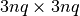
>>> from pyOptFEM.FEM3D import *
>>> Th=CubeMesh(5)
>>> Kbase = StiffElasAssembling3DP1base(Th.nq,Th.nme,Th.q,Th.me,Th.volumes,2,0.5,0)
>>> KOptV1= StiffElasAssembling3DP1OptV1(Th.nq,Th.nme,Th.q,Th.me,Th.volumes,2,0.5,0)
>>> print(" NormInf(Kbase-KOptV1)=%e " % NormInf(Kbase-KOptV1))
NormInf(Kbase-KOptV1)=1.332268e-15
>>> KOptV2= StiffElasAssembling3DP1OptV2(Th.nq,Th.nme,Th.q,Th.me,Th.volumes,2,0.5,0)
>>> print(" NormInf(Kbase-KOptV2)=%e " % NormInf(Kbase-KOptV2))
NormInf(Kbase-KOptV2)=1.332268e-15
We now illustrate the consequences of the choice of the global basis on matrix sparsity
global alternate basis
(Num=0 or Num=2)>>> from pyOptFEM.FEM3D import * >>> Th=CubeMesh(5) >>> K0=StiffElasAssembling3DP1OptV1(Th.nq,Th.nme,Th.q,Th.me,Th.volumes,2,0.5,0) >>> showSparsity(K0)
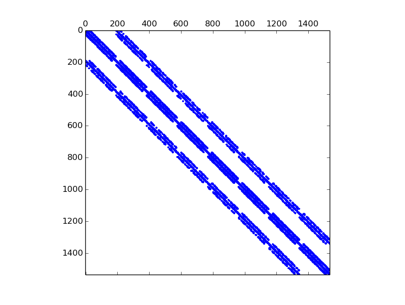Figure 19: Sparsity of the Elastic Stiffness Matrix generated with global alternate numbering (Num=0 or 2)
global block basis
(Num=1 or Num=3)>>> K3=StiffElasAssembling3DP1OptV1(Th.nq,Th.nme,Th.q,Th.me,Th.volumes,2,0.5,3) >>> showSparsity(K3)
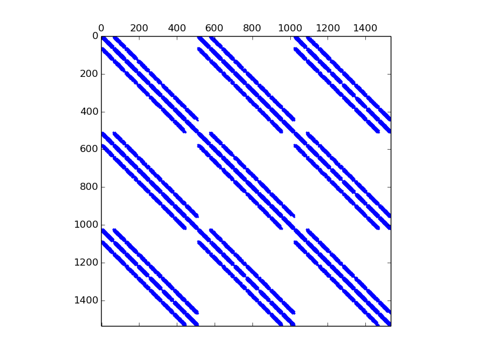Figure 20: Sparsity of the Elastic Stiffness Matrix generated with global block numbering (Num=1 or 3)
Note
source code
- pyOptFEM.FEM3D.assembly.StiffElasAssembling3DP1base(nq, nme, q, me, volumes, la, mu, Num)[source]
Assembly of the Elasticity Stiffness Matrix by
-Lagrange finite elements using base version (see report).
- pyOptFEM.FEM3D.assembly.StiffElasAssembling3DP1OptV1(nq, nme, q, me, volumes, la, mu, Num)[source]
Assembly of the Elasticity Stiffness Matrix by
-Lagrange finite elements using OptV1 version (see report).
- pyOptFEM.FEM3D.assembly.StiffElasAssembling3DP1OptV2(nq, nme, q, me, volumes, la, mu, Num)[source]
Assembly of the Elasticity Stiffness Matrix by
-Lagrange finite elements using OptV2 version (see report).
Element matrix (used by base and OptV1 versions)¶
Let  be a tetrahedron of volume
be a tetrahedron of volume  and with 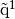, 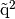,
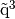
and 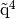 its four vertices. We denote by
and with 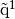, 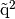,
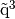
and 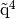 its four vertices. We denote by
 ,
,  ,
,  and
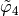
the -Lagrange local basis functions such that 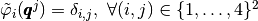 .
and
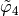
the -Lagrange local basis functions such that 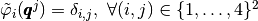 .
We also define the local alternate basis  by
by
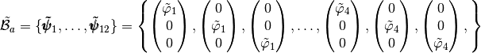
and the local block basis  by
by
![\tilde{\mathcal{B}}_b=\{\pmb{\tilde{\phi}}_1,\hdots,\pmb{\tilde{\phi}}_{12}\}=\left\{
\begin{pmatrix} \tilde{\varphi}_1 \\ 0 \\ 0\end{pmatrix},
\begin{pmatrix} \tilde{\varphi}_2 \\ 0 \\ 0\end{pmatrix},
\begin{pmatrix} \tilde{\varphi}_3 \\ 0 \\ 0 \end{pmatrix},
\begin{pmatrix} \tilde{\varphi}_4 \\ 0 \\ 0\end{pmatrix},\hdots,
\begin{pmatrix} 0 \\ 0 \\ \tilde{\varphi}_1 \end{pmatrix},
\begin{pmatrix} 0 \\ 0 \\ \tilde{\varphi}_2\end{pmatrix},
\begin{pmatrix} 0 \\ 0 \\ \tilde{\varphi}_3 \end{pmatrix}
\begin{pmatrix} 0 \\ 0 \\ \tilde{\varphi}_4 \end{pmatrix}
\right\}.](_images/math/6598af8127bbdfc818123c5c5df57f2eda5c360c.png)
The elasticity tensor,  , obtained from Hooke’s law with an isotropic material,
defined with the Lamé parameters and is given by
, obtained from Hooke’s law with an isotropic material,
defined with the Lamé parameters and is given by
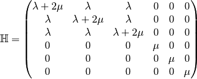
and, for a function 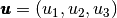 the strain tensors is given by
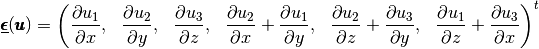
 for the tetrahedron
for the tetrahedron  ,
for the
,
for the Element Elastic Stiffness Matrix¶
The element elastic stiffness matrix,
 ,
for a given tetrahedron in the local alternate basis is defined by
,
for a given tetrahedron in the local alternate basis is defined by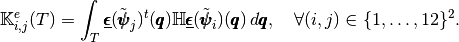
We also have

where
is the elasticity tensor and is a  matrix defined by
matrix defined by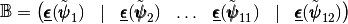
So in
basis we obtain![\mathbb{B}=\begin{pmatrix}
\DP{\tilde{\varphi}_1}{x}& 0 &0 & & \DP{\tilde{\varphi}_4}{x}& 0 &0 \\
0& \DP{\tilde{\varphi}_1}{y} & 0& & 0& \DP{\tilde{\varphi}_4}{y} & 0\\
0& 0 & \DP{\tilde{\varphi}_1}{z} & & 0& 0 & \DP{\tilde{\varphi}_4}{z}\\
\DP{\tilde{\varphi}_1}{y}& \DP{\tilde{\varphi}_1}{x} & 0 & \hdots\hdots& \DP{\tilde{\varphi}_4}{y}& \DP{\tilde{\varphi}_4}{x} & 0\\
0&\DP{\tilde{\varphi}_1}{z}& \DP{\tilde{\varphi}_1}{y} & & 0&\DP{\tilde{\varphi}_4}{z}& \DP{\tilde{\varphi}_4}{y}\\
\DP{\tilde{\varphi}_1}{z}& 0 & \DP{\tilde{\varphi}_1}{x} & & \DP{\tilde{\varphi}_4}{z}& 0 & \DP{\tilde{\varphi}_4}{x}
\end{pmatrix}](_images/math/452a7325867f2f795f6be260ee6c0f436820213c.png)
Note
source code
- pyOptFEM.FEM3D.elemMatrix.ElemStiffElasMatBa3DP1(ql, V, C)[source]¶
Returns the element elastic stiffness matrix
for a given tetrahedron in the local alternate basis Parameters: - ql (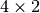 numpy array) – contains the four vertices of the tetrahedron,
- V (float) – volume of the tetrahedron
- H (
 numpy array) – Elasticity tensor, .
numpy array) – Elasticity tensor, .
Returns: in basis.Type : 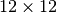 numpy array of floats.
The element elastic stiffness matrix,
,
for a given triangle in the local block basis is defined by
We also have
where
is the elasticity tensor and is a matrix defined by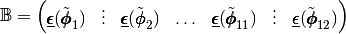
So in
basis we obtain![\mathbb{B}=\begin{pmatrix}
\DP{\tilde{\varphi}_1}{x}& \hdots &\DP{\tilde{\varphi}_4}{x} & 0& \hdots & 0 &0& \hdots & 0 \\
0& \hdots & 0 & \DP{\tilde{\varphi}_1}{y}& \hdots & \DP{\tilde{\varphi}_4}{y}& 0 & \hdots & 0\\
0& \hdots & 0 &0 & \hdots & 0 & \DP{\tilde{\varphi}_1}{z} & \hdots &\DP{\tilde{\varphi}_4}{z}\\
\DP{\tilde{\varphi}_1}{y}& \hdots & \DP{\tilde{\varphi}_4}{y}& \DP{\tilde{\varphi}_1}{x}& \hdots & \DP{\tilde{\varphi}_4}{x}& 0& \hdots & 0\\
0& \hdots & 0 & \DP{\tilde{\varphi}_1}{z}& \hdots & \DP{\tilde{\varphi}_4}{z}& \DP{\tilde{\varphi}_1}{y}& \hdots &\DP{\tilde{\varphi}_4}{y}\\
\DP{\tilde{\varphi}_1}{z}& \hdots & \DP{\tilde{\varphi}_4}{z} & 0& \hdots & 0 & \DP{\tilde{\varphi}_1}{x}& \hdots & \DP{\tilde{\varphi}_4}{x}
\end{pmatrix}](_images/math/fb9a10eb42a4ea438177d81ace01ac2d8d44fcf2.png)
Note
source code
- pyOptFEM.FEM3D.elemMatrix.ElemStiffElasMatBb3DP1(ql, V, C)[source]¶
Returns the element elastic stiffness matrix
for a given tetrahedron in the local block basis Parameters: - ql ( numpy array) – contains the four vertices of the tetrahedron,
- V (float) – volume of the tetrahedron
- H ( numpy array) – Elasticity tensor, .
Returns: in basis.Type : numpy array of floats.
Vectorized tools (used by OptV2 version)¶
Vectorized computation of basis functions gradients¶
By construction, the gradients of basis functions are constants on each element  So, we denote, 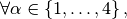 by
So, we denote, 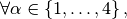 by  the 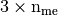 array defined,
the 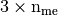 array defined,
 by
by

On  tetrahedra
we set
tetrahedra
we set
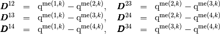
Then, we have
![\begin{array}{ll}
\GRAD\BasisFunc_{1}^k(\q)=\frac{1}{6|T_k|}
\begin{pmatrix}
-\vecb{D}^{23}_y \vecb{D}^{24}_z + \vecb{D}^{23}_z \vecb{D}^{24}_y\\
\vecb{D}^{23}_x \vecb{D}^{24}_z - \vecb{D}^{23}_z \vecb{D}^{24}_x\\
-\vecb{D}^{23}_x \vecb{D}^{24}_y + \vecb{D}^{23}_y \vecb{D}^{24}_x
\end{pmatrix},&\GRAD\BasisFunc_{2}^k(\q)=\frac{1}{6|T_k|}
\begin{pmatrix} \vecb{D}^{13}_y \vecb{D}^{14}_z - \vecb{D}^{13}_z \vecb{D}^{14}_y\\
-\vecb{D}^{13}_x \vecb{D}^{14}_z + \vecb{D}^{13}_z \vecb{D}^{14}_x\\
\vecb{D}^{13}_x \vecb{D}^{14}_y - \vecb{D}^{13}_y \vecb{D}^{14}_x
\end{pmatrix}\\
\GRAD\BasisFunc_{3}^k(\q)=\frac{1}{6|T_k|}
\begin{pmatrix} -\vecb{D}^{12}_y \vecb{D}^{14}_z + \vecb{D}^{12}_z \vecb{D}^{14}_y\\
\vecb{D}^{12}_x \vecb{D}^{14}_z - \vecb{D}^{12}_z \vecb{D}^{14}_x\\
-\vecb{D}^{12}_x \vecb{D}^{14}_y + \vecb{D}^{12}_y \vecb{D}^{14}_x
\end{pmatrix},&
\GRAD\BasisFunc_{4}^k(\q)=\frac{1}{6|T_k|}
\begin{pmatrix}
\vecb{D}^{12}_y \vecb{D}^{13}_z - \vecb{D}^{12}_z \vecb{D}^{13}_y\\
-\vecb{D}^{12}_x \vecb{D}^{13}_z + \vecb{D}^{12}_z \vecb{D}^{13}_x\\
\vecb{D}^{12}_x \vecb{D}^{13}_y - \vecb{D}^{12}_y \vecb{D}^{13}_x
\end{pmatrix}
\end{array}](_images/math/0083b6dabae51d34578014f115625570f818c6d3.png)
With these formulas, we obtain the vectorized algorithm given in Algorithm 26.
Vectorized element matrix (used by OptV2 version)¶
Element Mass Matrix¶
We have

Then with  definition (see Section New Optimized assembly algorithm (OptV2 version)) , we obtain
definition (see Section New Optimized assembly algorithm (OptV2 version)) , we obtain

So the vectorized algorithm for  computation is simple and given in Algorithm 27.
computation is simple and given in Algorithm 27.
Algorithm 27

Figure 22: Vectorized algorithm for associated to 3d Mass matrix
Note
- pyOptFEM.FEM3D.elemMatrixVec.ElemMassMat3DP1Vec(nme, volumes)[source]
Computes all the element Mass matrices
 for
for 
Parameters: volumes ( numpy array of floats) – volumes of all the mesh elements.Returns: a one dimensional numpy array of size 
Element Stiffness Matrix¶
We have 

Using vectorized algorithm function  given in Algorithm 26, we obtain
the vectorized algorithm 28 for computation for the Stiffness matrix in 3d.
given in Algorithm 26, we obtain
the vectorized algorithm 28 for computation for the Stiffness matrix in 3d.
Algorithm 28

Figure 23: Vectorized algorithm for associated to 3d Stiffness matrix
Note
- pyOptFEM.FEM3D.elemMatrixVec.ElemStiffMat3DP1Vec(nme, q, me, volumes)[source]
Computes all the element stiffness matrices
 for
for Parameters: - nme (int) – number of mesh elements,
- q (
 numpy array of floats) – mesh vertices,
numpy array of floats) – mesh vertices, - me (
 numpy array of integers) – mesh connectivity,
numpy array of integers) – mesh connectivity, - areas ( numpy array of floats) – areas of all the mesh elements.
Returns: a one dimensional numpy array of size

Element Elastic Stiffness Matrix¶
We define on the tetrahedron
the local alternate basis  by
by![\begin{array}{c}
\mathcal{B}_a^k=\{\BasisFuncTwoD_1^k,\hdots,\BasisFuncTwoD_{12}^k\}\\=\\
\left\{\tiny
\begin{pmatrix} \BasisFunc_1^k \\ 0 \\ 0\end{pmatrix},
\begin{pmatrix} 0 \\ \BasisFunc_1^k \\0 \end{pmatrix},
\begin{pmatrix} 0 \\ 0 \\ \BasisFunc_1^k \end{pmatrix},
\begin{pmatrix} \BasisFunc_2^k \\ 0 \\ 0\end{pmatrix},
\begin{pmatrix} 0 \\ \BasisFunc_2^k \\0 \end{pmatrix},
\begin{pmatrix} 0 \\ 0 \\ \BasisFunc_2^k \end{pmatrix},
\begin{pmatrix} \BasisFunc_3^k \\ 0 \\ 0\end{pmatrix},
\begin{pmatrix} 0 \\ \BasisFunc_3^k \\0 \end{pmatrix},
\begin{pmatrix} 0 \\ 0 \\ \BasisFunc_3^k \end{pmatrix},
\begin{pmatrix} \BasisFunc_4^k \\ 0 \\ 0\end{pmatrix},
\begin{pmatrix} 0 \\ \BasisFunc_4^k \\0 \end{pmatrix},
\begin{pmatrix} 0 \\ 0 \\ \BasisFunc_4^k \end{pmatrix}
\right\}
\end{array}](_images/math/2060c318244a1a093ab4a7a603d13de6e186b4b9.png)
where
 With notations of Presentation,
we have
With notations of Presentation,
we have 

with,

 by
by![\begin{array}{c}
\mathcal{H}(\vecb{u},\vecb{v})\\=\\
\tiny{
\DOT{\begin{pmatrix} \gamma & 0 &0\\ 0 & \mu &0\\ 0 & 0 &\mu\end{pmatrix}\GRAD u_1 }{\GRAD v_1}
+\DOT{\begin{pmatrix} 0 & \lambda & 0\\ \mu & 0 & 0 \\ 0 & 0 & 0 \end{pmatrix}\GRAD u_2 }{\GRAD v_1}
+\DOT{\begin{pmatrix} 0 & 0 & \lambda\\ 0 & 0 & 0 \\ \mu & 0 & 0 \end{pmatrix}\GRAD u_3 }{\GRAD v_1}
}\\
%&+&
\tiny{+
\DOT{\begin{pmatrix} 0 & \mu &0\\ \lambda & 0 &0\\ 0 & 0 &0\end{pmatrix}\GRAD u_1 }{\GRAD v_2}
+\DOT{\begin{pmatrix} \mu & 0 & 0\\ 0 & \gamma & 0 \\ 0 & 0 & \mu \end{pmatrix}\GRAD u_2 }{\GRAD v_2}
+\DOT{\begin{pmatrix} 0 & 0 & 0\\ 0 & 0 & \lambda \\ 0 & \mu & 0 \end{pmatrix}\GRAD u_3 }{\GRAD v_2}
}\\
%&+&
\tiny{+
\DOT{\begin{pmatrix} 0 & 0 &\mu\\ 0 & 0 &0\\ \lambda & 0 & 0\end{pmatrix}\GRAD u_1 }{\GRAD v_3}
+\DOT{\begin{pmatrix} 0 & 0 & 0\\ 0 & 0 & \mu \\ 0 & \lambda & 0 \end{pmatrix}\GRAD u_2 }{\GRAD v_3}
+\DOT{\begin{pmatrix} \mu & 0 & 0\\ 0 & \mu & 0 \\ 0 & 0 & \gamma \end{pmatrix}\GRAD u_3 }{\GRAD v_3}
}
\end{array}](_images/math/966dac90c9bb68859a3b173ab0ab2ef0b3d43379.png)
where
and are the Lame coefficients and 
For example, we can explicitly compute the first two terms in the first column of
 which are given by
which are given by![\begin{array}{lcl}
\StiffElasElem_{1,1}(T_k)&=&\int_{T_k} \mathcal{H}(\BasisFuncTwoD^k_{1},\BasisFuncTwoD^k_{1})(\q)d\q\\
&=&\int_{T_k} \mathcal{H}\left(
\tiny\begin{pmatrix}
\BasisFunc^k_{1}\\
0\\
0
\end{pmatrix},
\tiny\begin{pmatrix}
\BasisFunc^k_{1}\\
0\\ 0
\end{pmatrix}
\right)(\q)d\q\\
&=&|T_k|
\DOT{\tiny\begin{pmatrix} \gamma & 0 &0\\ 0 & \mu &0\\ 0 & 0 &\mu\end{pmatrix}\GRAD \BasisFunc^k_{1} }{\GRAD \BasisFunc^k_{1}}
=|T_k|\left(\gamma\DP{\BasisFunc^k_{1}}{x}\DP{\BasisFunc^k_{1}}{x}+\mu(\DP{\BasisFunc^k_{1}}{y}\DP{\BasisFunc^k_{1}}{y}+\DP{\BasisFunc^k_{1}}{z}\DP{\BasisFunc^k_{1}}{z}) \right).
\end{array}](_images/math/f31f782483fbaab8941ce8f3c00e6367807572bc.png)
and
![\begin{array}{lcl}
\StiffElasElem_{2,1}(T_k)&=&\int_{T_k} \mathcal{H}(\BasisFuncTwoD^k_{1},\BasisFuncTwoD^k_{2})(\q)d\q\\
&=&\int_{T_k} \mathcal{H}\left(
\tiny\begin{pmatrix}
\BasisFunc^k_{1}\\
0\\0
\end{pmatrix},
\begin{pmatrix}
0\\
\BasisFunc^k_{1}\\ 0
\end{pmatrix}
\right)(\q)d\q\\
&=&|T_k|
\DOT{\tiny\begin{pmatrix} 0 & \mu &0\\ \lambda & 0 &0\\ 0 & 0 &0\end{pmatrix}\GRAD \BasisFunc^k_{1} }{\GRAD \BasisFunc^k_{1}}
=|T_k|(\lambda+\mu)\DP{\BasisFunc^k_{1}}{x}\DP{\BasisFunc^k_{1}}{y}.
\end{array}](_images/math/3225a4c4059f6c6445664bcd509f69ab55badf13.png)
Using vectorized algorithm function
given in Algorithm 26, we obtain
the vectorized algorithm 29 for computation for the Elastic Stiffness matrix in 3d.Algorithm 29

Figure 24: Vectorized algorithm for
associated to 3d Elastic Stiffness matrixNote
- pyOptFEM.FEM3D.elemMatrixVec.ElemStiffElasMatBa3DP1Vec(nme, q, me, volumes, la, mu)[source]
Computes all the element elastic stiffness matrices
 for
in local alternate basis.
for
in local alternate basis.Parameters: Returns: a (144*nme,) numpy array of floats.
We define on
the local block basis  by
by![\begin{array}{c}
\mathcal{B}_b^k=\{\BasisFuncTwoDB_1^k,\hdots,\BasisFuncTwoDB_{12}^k\} \\ = \\
\left\{\tiny
\begin{pmatrix} \BasisFunc_1^k \\ 0 \\ 0 \end{pmatrix},
\begin{pmatrix} \BasisFunc_2^k \\ 0 \\ 0 \end{pmatrix},
\begin{pmatrix} \BasisFunc_3^k \\ 0 \\ 0 \end{pmatrix},
\begin{pmatrix} \BasisFunc_4^k \\ 0 \\ 0 \end{pmatrix},
\begin{pmatrix} 0 \\ \BasisFunc_1^k \\ 0 \end{pmatrix},
\begin{pmatrix} 0 \\ \BasisFunc_2^k \\ 0 \end{pmatrix},
\begin{pmatrix} 0 \\ \BasisFunc_3^k \\ 0 \end{pmatrix},
\begin{pmatrix} 0 \\ \BasisFunc_4^k \\ 0 \end{pmatrix},
\begin{pmatrix} 0 \\ 0 \\ \BasisFunc_1^k \end{pmatrix},
\begin{pmatrix} 0 \\ 0 \\ \BasisFunc_2^k \end{pmatrix},
\begin{pmatrix} 0 \\ 0 \\ \BasisFunc_3^k \end{pmatrix},
\begin{pmatrix} 0 \\ 0 \\ \BasisFunc_4^k \end{pmatrix}
\right\}
\end{array}](_images/math/7c4bf83fbf2fdf41f5cb21583408a47f29c82237.png)
where
For example, using formula (?), we can explicitly compute the first two terms in the first column of
which are given by![\begin{array}{lcl}
\StiffElasElem_{1,1}(T_k)&=&\int_{T_k} \mathcal{H}(\BasisFuncTwoDB^k_{1},\BasisFuncTwoDB^k_{1})(\q)d\q\\
&=&\int_{T_k} \mathcal{H}\left(
\tiny\begin{pmatrix}
\BasisFunc^k_{1}\\
0\\0
\end{pmatrix},
\begin{pmatrix}
\BasisFunc^k_{1}\\
0\\0
\end{pmatrix}
\right)(\q)d\q\\
&=&|T_k|
\DOT{\tiny\begin{pmatrix} \gamma & 0 &0\\ 0 & \mu &0\\ 0 & 0 &\mu\end{pmatrix}\GRAD \BasisFunc^k_{1} }{\GRAD \BasisFunc^k_{1}}
=|T_k|\left(\gamma\DP{\BasisFunc^k_{1}}{x}\DP{\BasisFunc^k_{1}}{x}+\mu(\DP{\BasisFunc^k_{1}}{y}\DP{\BasisFunc^k_{1}}{y} +\DP{\BasisFunc^k_{1}}{z}\DP{\BasisFunc^k_{1}}{z})\right).
\end{array}](_images/math/c4aef18f1397200b418955ce636071bc976bd58e.png)
and
![\begin{array}{lcl}
\StiffElasElem_{2,1}(T_k)&=&\int_{T_k} \mathcal{H}(\BasisFuncTwoDB^k_{1},\BasisFuncTwoDB^k_{2})(\q)d\q\\
&=&\int_{T_k} \mathcal{H}\left(
\tiny \begin{pmatrix}
\BasisFunc^k_{1}\\
0\\ 0
\end{pmatrix},
\begin{pmatrix}
\BasisFunc^k_{2}\\
0\\ 0
\end{pmatrix}
\right)(\q)d\q\\
&=&|T_k|
\DOT{\tiny\begin{pmatrix} \gamma & 0 &0\\ 0 & \mu &0\\ 0 & 0 &\mu\end{pmatrix}\GRAD \BasisFunc^k_{1} }{\GRAD \BasisFunc^k_{2}}
=|T_k|\left(\gamma\DP{\BasisFunc^k_{1}}{x}\DP{\BasisFunc^k_{2}}{x}+\mu(\DP{\BasisFunc^k_{1}}{y}\DP{\BasisFunc^k_{2}}{y}+\DP{\BasisFunc^k_{1}}{z}\DP{\BasisFunc^k_{2}}{z}) \right).
\end{array}](_images/math/c7bc5b702294ebee564e5c3c2e19643d6cea022a.png)
Using vectorized algorithm function
given in Algorithm 26, we obtain
the vectorized algorithm 30 for computation for the Elastic Stiffness matrix in 3d.Algorithm 30

Figure 25: Vectorized algorithm for
associated to 3d Elastic Stiffness matrixNote
- pyOptFEM.FEM3D.elemMatrixVec.ElemStiffElasMatBb3DP1Vec(nme, q, me, volumes, L, M)[source]
Compute all the element elastic stiffness matrices,
for
in local block basis.Parameters: Returns: a (144*nme,) numpy array of floats.
 Lame parameter,
Lame parameter, Lame parameter.
Lame parameter.Mesh¶
- class pyOptFEM.FEM3D.mesh.CubeMesh(N, **kwargs)[source]¶
Creates meshes of the unit cube 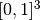. Class attributes are :
nq, total number of mesh vertices (points), also denoted
.nme, total number of mesh elements (tetrahedra in 3d),
version, mesh structure version,
q, Numpy array of vertices coordinates, dimension (nq,3) (version 0) or (3,nq) (version 1).
q[j] (version 0) or q[:,j] (version 1) are the three coordinates of the
 -th vertex,
-th vertex, 
me, Numpy connectivity array, dimension (nme,4) (version 0) or (4,nme) (version 1).
me[k] (version 0) or me[:,k] (version 1) are the storage index of the four vertices of the
 -th tetrahedron in the array q of vertices coordinates,
-th tetrahedron in the array q of vertices coordinates,  .
.volumes, Array of mesh elements volumes, (nme,) Numpy array.
volumes[k] is the volume of
-th tetrahedron, k in range(0,nme)
Parameters: N – number of points on each edge of the cube optional parameter : version=0 or version=1
- class pyOptFEM.FEM3D.mesh.getMesh(filename, **kwargs)[source]¶
Reads a medit mesh from file meshfile. Class attributes are :
nq, total number of mesh vertices (points), also denoted
.nme, total number of mesh elements (tetrahedra in 3d),
version, mesh structure version,
q, Numpy array of vertices coordinates, dimension (nq,3) (version 0) or (3,nq) (version 1).
q[j] (version 0) or q[:,j] (version 1) are the three coordinates of the
-th vertex, me, Numpy connectivity array, dimension (nme,4) (version 0) or (4,nme) (version 1).
me[k] (version 0) or me[:,k] (version 1) are the storage index of the four vertices of the
-th tetrahedron in the array q of vertices coordinates, .volumes, Array of mesh elements volumes, (nme,) Numpy array.
volumes[k] is the volume of
-th tetrahedron, k in range(0,nme)
Parameters: meshfile – medit mesh file optional parameter : version=0 or version=1

{kind=link}
{kind=link}
{kind=link}
{kind=link}